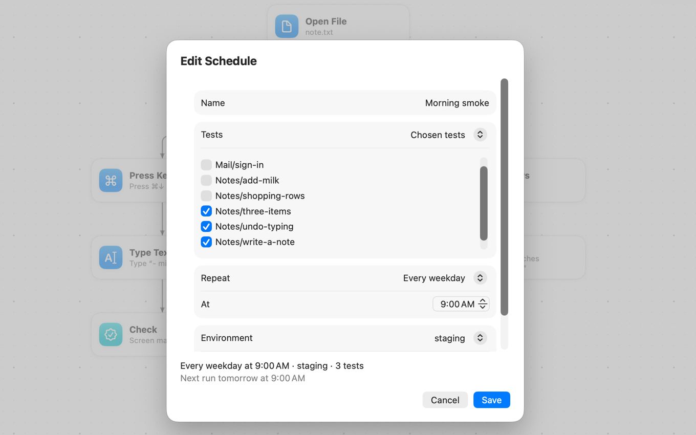

Schedules
Run tests on their own: every night, on weekdays, or every few hours, with the results waiting for you in the morning.

Make a schedule
Choose Test → Schedules…, or click the schedule line at the foot of the sidebar. A schedule says:
- which tests run: all tests, the tests in one folder, or tests you choose;
- when: every day, on chosen days of the week, or every 1, 2, 3, 4, 6, 8 or 12 hours from a start time;
- with which environment and whether to record video (never, only when a test fails, or always).
The sheet shows each schedule in words, its next run and how its last run went.
The schedule file
Schedules are saved in jevision.schedule.json in the project folder and committed with the tests, so the whole team sees the same schedules:
{
"format": 1,
"schedules": [
{ "name": "Nightly", "tests": "all", "repeat": "daily", "at": "03:00" },
{ "name": "Smoke", "tests": { "files": ["sign-in.flow.json", "mail/send.flow.json"] },
"repeat": { "days": ["mon", "tue", "wed", "thu", "fri"] }, "at": "09:05",
"environment": "staging", "video": "on-failure" },
{ "name": "Checkout", "tests": { "folder": "checkout" }, "repeat": { "everyHours": 6 },
"at": "01:30" }
]
}| Field | Required | Value |
|---|---|---|
name | Yes | Unique within the file, regardless of case. |
tests | Yes | "all", { "folder": "path" } or { "files": ["path", …] }. Paths are relative to the project folder and never lead outside it. |
repeat | Yes | "daily"; { "days": [...] } with any of sun, mon, tue, wed, thu, fri, sat; or { "everyHours": N } with N one of 1, 2, 3, 4, 6, 8, 12. |
at | Yes | Local time as HH:MM. For everyHours it is the first run of the day, and the others follow every N hours. |
environment | No | An environment from jevision.environments.json. Default: the project's default environment. |
video | No | off, on-failure or always. Default: the app's setting. |
How schedules run
A schedule file in git does nothing by itself on a Mac: schedules run on a Mac only after you save them or click Turn On in the sheet there. The app then installs a launch agent for the project, a small file macOS uses to start programs at set times:
~/Library/LaunchAgents/io.github.dev-pikapik.jevision.schedule.<id>.plistThe app keeps it in step with the schedule file. Deleting every schedule removes the launch agent.
At the schedules' times, the agent starts jevision schedule run project. This command:
- runs every schedule that is due now;
- catches up once on a run missed while the Mac was asleep or off, unless it is more than 12 hours late; then it waits for its next time;
- saves reports like any other run; the app's run history marks them “Schedule”.
You don't need to run jevision schedule run yourself. See Command line for its exit status.
Preparing a Mac for runs nobody watches
Tests use the real screen, mouse and keyboard, so a scheduled run needs:
- A logged-in user. Nobody logged in means no screen to test on.
- An unlocked screen. A run due while the screen is locked is skipped and recorded as “skipped: screen locked”. JEVision never types into a locked screen. Turn off the automatic lock in System Settings → Lock Screen.
- Screen & System Audio Recording and Accessibility (Device Control and Data Access from macOS 27) allowed for
jevision. Without them the run is skipped and nothing is clicked or typed. See Permissions. - Secrets the tests need, saved in the Keychain, with Always Allow chosen the first time macOS asks. See Secrets.
Results
- The app posts a notification when a scheduled run fails, is skipped or can't start. To be told in Slack, Telegram or email as well, with one summary for the whole schedule, see Notifications.
- What came of each scheduled run is kept in
.jevision/schedule-history.json, newest 200 runs. This file is local to the Mac and not committed. - The reports of the tests are in the run history with the other runs. See Run video and reports.